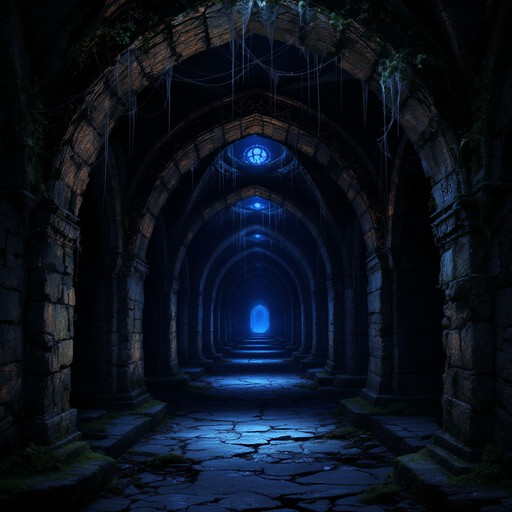

Du folgst dem summenden Geräusch und gelangst in einen ungewöhnlich stillen Korridor. Das Summen wird hier lauter und scheint von den Wänden selbst zu kommen. Die Stille ist so intensiv, dass sogar das allgegenwärtige Ticken des Turms gedämpft erscheint.
Der Korridor ist lang und gerade, mit hohen Gewölbedecken. Seltsame, bläuliche Lichter schweben in der Luft und erhellen den Weg. Du bemerkst, dass deine Schritte hier keinen Ton von sich geben - als würde der Korridor alle Geräusche verschlucken. Der Gang führt in zwei Richtungen. In der einen hörst du ein leichtes tropfen von Wasser, uf der anderen Seite siehst du nur eine polierte Metalltür.